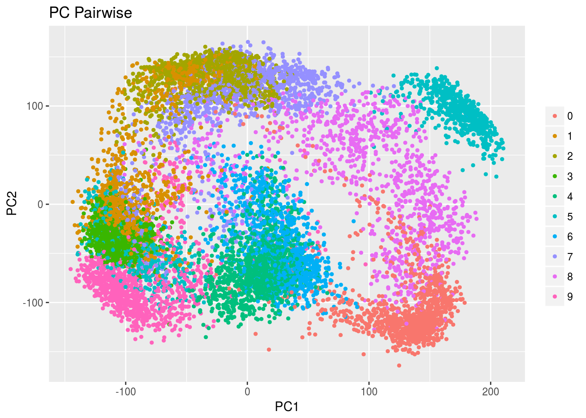
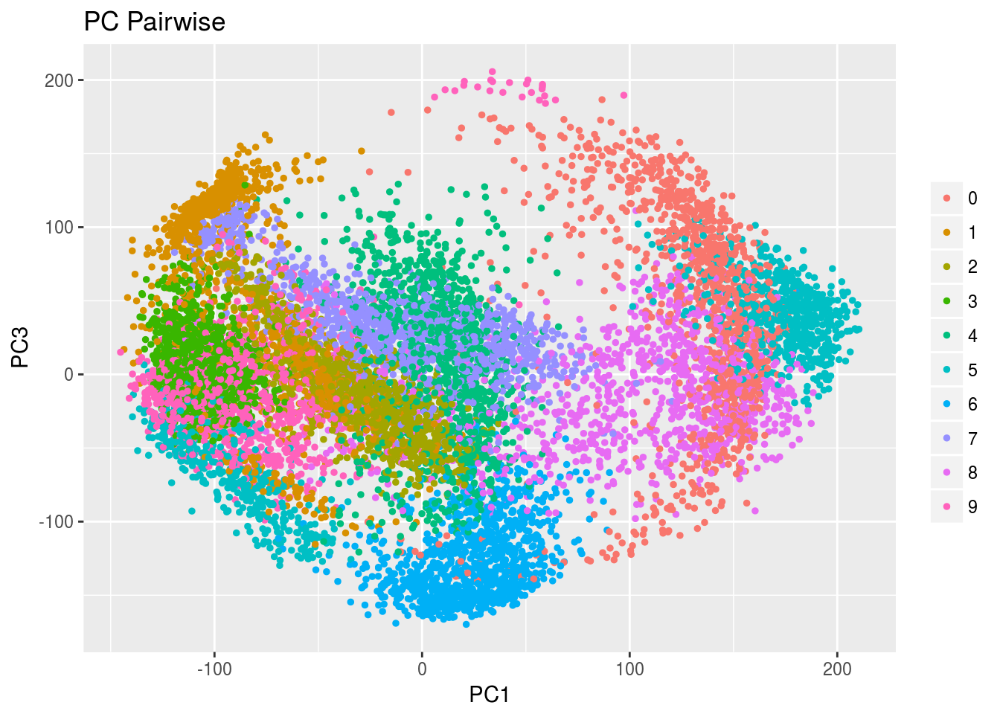
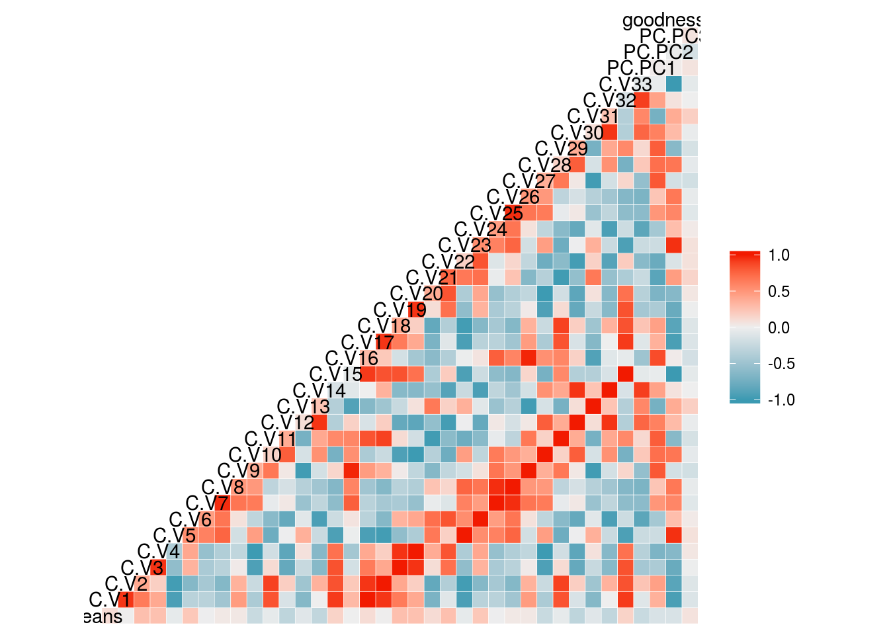

rrr for Principal Component Analysis
Chris Addy
2016-12-08
Mathematical Background
PCA is a Special Case of Reduced-Rank Regression
Set
\[ \begin{aligned} \mathbf{Y} & \equiv \mathbf{X} \\ \mathbf{\Gamma} & = \mathbf{I}_r \end{aligned} \]
Then, the least squares criterion
\[ \mathrm{E}\left[\left(\mathbf{X} - \boldsymbol{\mu} - \mathbf{A}\mathbf{B} \mathbf{X}\right)\left(\mathbf{X} - \boldsymbol{\mu} - \mathbf{A}\mathbf{B} \mathbf{X}\right)^\tau\right] \]
is minimized when
\[ \begin{aligned} \mathbf{A}^{\left(t\right)} & = \left(\mathbf{v}_1, \dots, \mathbf{v}_t\right) \\ \mathbf{B}^{\left(t\right)} & = \mathbf{A}^{\left(t\right) \tau} \\ \boldsymbol{\mu}^{\left(t\right)} & = \left(\mathbf{I}_r - \mathbf{A}^{\left(t\right)}\mathbf{B}^{\left(t\right)}\right)\boldsymbol{\mu}_X \\ \end{aligned} \]
where \(\mathbf{v}_j = \mathbf{v}_j \left(\mathbf{\Sigma}_{XX}\right)\) is the eigenvector associated with the \(j\)th largest eigenvalue of \(\mathbf{\Sigma}_{XX}.\)
The best reduced-rank approximation to the original \(\mathbf{X}\) is
\[ \begin{aligned} \hat{\mathbf{X}}^{\left(t\right)} & = \boldsymbol{\mu}^{\left(t\right)} + \mathbf{A}^{\left(t\right)}\mathbf{B}^{\left(t\right)} \mathbf{X} \\ & \mathrm{or} \\ \hat{\mathbf{X}} & = \mathbf{A}^{\left(t\right)}\mathbf{B}^{\left(t\right)}\mathbf{X}_c \\ \end{aligned} \]
where \(\mathbf{X}_c\) is the vector \(mathbf{X}\) after mean-centering.
The first principle component is a latent variable that is a linear combination of the \(X_i\)s that maximizes the variance among the \(X_i\)s. The second principle component is another linear combination that maximizes the variance among the \(X_i\)s subject to being independent of the first principal component. There are \(r\) possible principal components, each independent of each other, that capture decreasing amounts of variance. The goal is to use as few principle components as necessary to capture the variance in the data and reduce dimensionality. The question of how many principle components to keep is equivalent to assessing the effective dimensionality \(t\) of the reduced-rank regression.
The pendigits Data Set
data(pendigits)
digits <- as_data_frame(pendigits) %>% select(-V36)
glimpse(digits)## Observations: 10,992
## Variables: 35
## $ V1 <int> 47, 0, 0, 0, 0, 100, 0, 0, 13, 57, 74, 48, 100, 91, 0, 35,...
## $ V2 <int> 100, 89, 57, 100, 67, 100, 100, 39, 89, 100, 87, 96, 100, ...
## $ V3 <int> 27, 27, 31, 7, 49, 88, 3, 2, 12, 22, 31, 62, 72, 54, 38, 5...
## $ V4 <int> 81, 100, 68, 92, 83, 99, 72, 62, 50, 72, 100, 65, 99, 100,...
## $ V5 <int> 57, 42, 72, 5, 100, 49, 26, 11, 72, 0, 0, 88, 36, 0, 81, 1...
## $ V6 <int> 37, 75, 90, 68, 100, 74, 35, 5, 38, 31, 69, 27, 78, 87, 88...
## $ V7 <int> 26, 29, 100, 19, 81, 17, 85, 63, 56, 25, 62, 21, 34, 23, 8...
## $ V8 <int> 0, 45, 100, 45, 80, 47, 35, 0, 0, 0, 64, 0, 54, 59, 50, 66...
## $ V9 <int> 0, 15, 76, 86, 60, 0, 100, 100, 4, 75, 100, 21, 79, 81, 84...
## $ V10 <int> 23, 15, 75, 34, 60, 16, 71, 43, 17, 13, 79, 33, 47, 67, 12...
## $ V11 <int> 56, 37, 50, 100, 40, 37, 73, 89, 0, 100, 100, 79, 64, 100,...
## $ V12 <int> 53, 0, 51, 45, 40, 0, 97, 99, 61, 50, 38, 67, 13, 39, 0, 9...
## $ V13 <int> 100, 69, 28, 74, 33, 73, 65, 36, 32, 75, 84, 100, 19, 79, ...
## $ V14 <int> 90, 2, 25, 23, 20, 16, 49, 100, 94, 87, 0, 100, 0, 4, 22, ...
## $ V15 <int> 40, 100, 16, 67, 47, 20, 66, 0, 100, 26, 18, 0, 0, 21, 100...
## $ V16 <int> 98, 6, 0, 0, 0, 20, 0, 57, 100, 85, 1, 85, 2, 0, 24, 17, 7...
## $ V17 <int> 8, 2, 1, 4, 1, 6, 4, 0, 5, 0, 9, 8, 5, 9, 7, 3, 3, 9, 2, 2...
## $ V18 <int> 1, 2, 3, 6, 3, 4, 6, 10, 7, 5, 6, 1, 9, 6, 2, 9, 9, 9, 2, ...
## $ V19 <int> 47, 0, 0, 0, 0, 100, 0, 0, 13, 57, 74, 48, 100, 91, 0, 35,...
## $ V20 <int> 100, 89, 57, 100, 67, 100, 100, 39, 89, 100, 87, 96, 100, ...
## $ V21 <int> 27, 27, 31, 7, 49, 88, 3, 2, 12, 22, 31, 62, 72, 54, 38, 5...
## $ V22 <int> 81, 100, 68, 92, 83, 99, 72, 62, 50, 72, 100, 65, 99, 100,...
## $ V23 <int> 57, 42, 72, 5, 100, 49, 26, 11, 72, 0, 0, 88, 36, 0, 81, 1...
## $ V24 <int> 37, 75, 90, 68, 100, 74, 35, 5, 38, 31, 69, 27, 78, 87, 88...
## $ V25 <int> 26, 29, 100, 19, 81, 17, 85, 63, 56, 25, 62, 21, 34, 23, 8...
## $ V26 <int> 0, 45, 100, 45, 80, 47, 35, 0, 0, 0, 64, 0, 54, 59, 50, 66...
## $ V27 <int> 0, 15, 76, 86, 60, 0, 100, 100, 4, 75, 100, 21, 79, 81, 84...
## $ V28 <int> 23, 15, 75, 34, 60, 16, 71, 43, 17, 13, 79, 33, 47, 67, 12...
## $ V29 <int> 56, 37, 50, 100, 40, 37, 73, 89, 0, 100, 100, 79, 64, 100,...
## $ V30 <int> 53, 0, 51, 45, 40, 0, 97, 99, 61, 50, 38, 67, 13, 39, 0, 9...
## $ V31 <int> 100, 69, 28, 74, 33, 73, 65, 36, 32, 75, 84, 100, 19, 79, ...
## $ V32 <int> 90, 2, 25, 23, 20, 16, 49, 100, 94, 87, 0, 100, 0, 4, 22, ...
## $ V33 <int> 40, 100, 16, 67, 47, 20, 66, 0, 100, 26, 18, 0, 0, 21, 100...
## $ V34 <int> 98, 6, 0, 0, 0, 20, 0, 57, 100, 85, 1, 85, 2, 0, 24, 17, 7...
## $ V35 <int> 8, 2, 1, 4, 1, 6, 4, 0, 5, 0, 9, 8, 5, 9, 7, 3, 3, 9, 2, 2...digits_features <- digits %>% select(-V35)
digits_class <- digits %>% select(V35)GGally::ggcorr(digits_features)
Assessing Dimensionality
pca_gof(digits_features) %>% round(4)## [1] 0.7169 0.4681 0.3145 0.2243 0.1664 0.1181 0.0874 0.0607 0.0414 0.0276
## [11] 0.0190 0.0122 0.0078 0.0038 0.0020 0.0003 0.0001 0.0000 0.0000 0.0000
## [21] 0.0000 0.0000 0.0000 0.0000 0.0000 0.0000 0.0000 0.0000 0.0000 0.0000
## [31] 0.0000 0.0000 0.0000 0.0000 Estimate \(t\) and ridge constant \(k\) with pca_rank_trace()
args(pca_rank_trace)## function (x, type = "cov", k = 0, plot = TRUE, interactive = FALSE)
## NULLpca_rank_trace() is a special case of rank_trace(), with \(\mathbf{Y} \equiv \mathbf{X}\) and \(\mathbf{\Gamma} = \mathbf{I}_r\).
pca_rank_trace(digits_features)
pca_rank_trace(digits_features, plot = FALSE)## # A tibble: 35 × 3
## rank delta_C delta_residuals
## <int> <dbl> <dbl>
## 1 0 1.0000000 1.00000000
## 2 1 0.9851844 0.71687775
## 3 2 0.9701425 0.46805987
## 4 3 0.9548637 0.31446713
## 5 4 0.9393364 0.22432933
## 6 5 0.9235481 0.16640087
## 7 6 0.9074852 0.11813147
## 8 7 0.8911328 0.08737814
## 9 8 0.8744746 0.06065970
## 10 9 0.8574929 0.04138801
## # ... with 25 more rowsPlot Principal Component Scores
Pairwise Plots with pca_pairwise_plot()
args(pca_pairwise_plot)## function (x, pc_x = 1, pc_y = 2, class_labels = NULL, rank = "full",
## type = "cov", interactive = FALSE, point_size = 2.5)
## NULLA common PCA method of visualization for diagnostic and analysis purposes is to plot the \(j\)th sample PC scores against the \(k\)th PC scores,
\[ \begin{aligned} \left(\xi_{ij}, \xi_{ik}\right) & \\ = \left(\hat{\mathbf{v}}_j^\tau \mathbf{X}_i, \hat{\mathbf{v}}_k^\tau \mathbf{X}_i\right)&, \quad i = 1,2, \dots, n \end{aligned} \]
Since the first two principal components will capture the most variance – and hence the most useful information – of all possible pairs of principal components, we typically would set \(j = 1, k = 2\) and plot the first two sample PC scores against each other. In rrr this is the default.
pca_pairwise_plot(digits_features, class_labels = digits_class)
We can set the \(x\)- and \(y\)-axes to whichever pairs of PC scores we would like to plot by changing the pc_x and pc_y arguments.
pca_pairwise_plot(digits_features, pc_x = 1, pc_y = 3, class_labels = digits_class)
Fitting a PCA Model
Fit model with pca()
args(pca)## function (x, rank = "full", type = "cov", k = 0)
## NULLdigits_class <- digits %>% dplyr::select(V35)
digits_features <- digits %>% dplyr::select(-V5, -V6)
digits_pca <- pca(digits_features, rank = 3)
digits_pca## $means
## V1 V2 V3 V4 V7 V8 V9
## 38.814320 85.120269 40.605622 83.774199 51.220251 44.498999 56.868541
## V10 V11 V12 V13 V14 V15 V16
## 33.695961 60.516376 34.826510 55.022289 34.937045 47.287482 28.845342
## V17 V18 V19 V20 V21 V22 V23
## 4.431587 5.341794 38.814320 85.120269 40.605622 83.774199 49.770378
## V24 V25 V26 V27 V28 V29 V30
## 65.573144 51.220251 44.498999 56.868541 33.695961 60.516376 34.826510
## V31 V32 V33 V34 V35
## 55.022289 34.937045 47.287482 28.845342 4.431587
##
## $C
## # A tibble: 33 × 33
## V1 V2 V3 V4 V5
## <dbl> <dbl> <dbl> <dbl> <dbl>
## 1 0.15447118 0.042863441 6.348389e-02 0.030143804 -0.12970234
## 2 0.04286344 0.013525199 1.194905e-02 0.004268061 -0.03971350
## 3 0.06348389 0.011949051 6.273252e-02 0.045106413 -0.05127815
## 4 0.03014380 0.004268061 4.510641e-02 0.036326297 -0.02785314
## 5 -0.12970234 -0.039713497 -5.127815e-02 -0.027853140 0.12441842
## 6 -0.04129191 -0.023357654 2.534616e-02 0.022890744 0.06120161
## 7 -0.04777965 -0.019098613 -3.962215e-02 -0.038569346 0.07935551
## 8 -0.05386455 -0.021359512 -2.499510e-02 -0.021812898 0.07603284
## 9 0.06996666 0.014938632 -7.854437e-05 -0.023496769 -0.01998258
## 10 -0.04958687 -0.008643804 -6.999787e-02 -0.057246332 0.05044546
## # ... with 23 more rows, and 28 more variables: V6 <dbl>, V7 <dbl>,
## # V8 <dbl>, V9 <dbl>, V10 <dbl>, V11 <dbl>, V12 <dbl>, V13 <dbl>,
## # V14 <dbl>, V15 <dbl>, V16 <dbl>, V17 <dbl>, V18 <dbl>, V19 <dbl>,
## # V20 <dbl>, V21 <dbl>, V22 <dbl>, V23 <dbl>, V24 <dbl>, V25 <dbl>,
## # V26 <dbl>, V27 <dbl>, V28 <dbl>, V29 <dbl>, V30 <dbl>, V31 <dbl>,
## # V32 <dbl>, V33 <dbl>
##
## $PC
## # A tibble: 33 × 3
## PC1 PC2 PC3
## <dbl> <dbl> <dbl>
## 1 -0.03374791 0.13032399 -0.36925319
## 2 0.02894289 0.04892121 -0.10146045
## 3 -0.10722996 -0.10651917 -0.19971961
## 4 -0.05948104 -0.13281868 -0.12307518
## 5 -0.08464187 -0.06408401 0.33637391
## 6 -0.26814011 -0.13457976 0.08883364
## 7 -0.22105337 0.18896276 0.21629094
## 8 -0.19770634 0.07599867 0.19076660
## 9 -0.22435733 0.32701486 -0.05355998
## 10 0.05637675 0.21559127 0.20522769
## # ... with 23 more rows
##
## $goodness_of_fit
## PC1 PC2 PC3
## 0.7142694 0.4688514 0.3078668GGally::ggcorr(digits_pca)